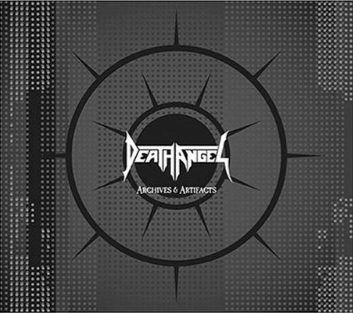

Bu aralar dinleyecek doğru düzgün birşeyler bulamamanın sıkıntısı içindeyim. Eski albümlerin remaster edilmiş yeni versionlarını dinlemek bir yere kadar, yeni birşeyler arıyorum.
Bu gece aradığımı bulabildim mi? Hayır. Yine eskilerden, ama bu sefer gerçekten hiç el değmemiş bir hazine bulmuş gibi oldum. Death Angel’ın 3 CD + 1 DVD’den oluşan Archives & Artifacts boxset’inin 3.CD’si şimdiye kadar hiç dinlemediğim, pek çoğu yayınlanmamış demo kayıtlardan oluşan bir albüm. Death Angel 80’li yılların sonlarında en önemli speed-trash metal gruplarından biri olmak üzereyken yanlış promosyon ve pazarlama taktiklerinin kurbanı olan çok önemli bir gruptu.
Bir yandan Eski Death Angel’a yeniden kavuşmanın mutluluğu yaşıyorum, bir yandan da eski Death Angel’a ait başka hiçbirşey bulamayacak olmanın hüznünü…